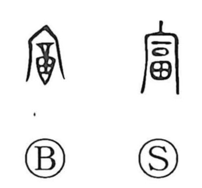

富

Kun: tomu, tomi, yutaka | On: fu
wealth ・ abundance ・ prosperity ・ to be rich
Explanation
Shirakawa interprets 富 as a phono-semantic character. The phonetic 冨 (fu) depicts a vessel with a swollen belly, like a wine cask, and carries the sense of being full or filling up; the Shuowen glosses it as “to be furnished,” emphasizing ample supply. Set beneath 宀—his “ben,” the roof of the ancestral mausoleum—the picture becomes fullness sheltered within the sacred house: offerings laid out in abundance before the gods. From this image of ritual plenty arise the meanings “to become rich,” “wealth,” “abundance,” and “prosperous.”